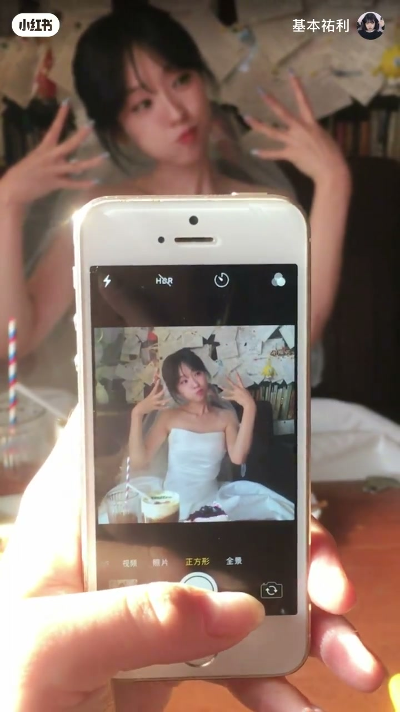
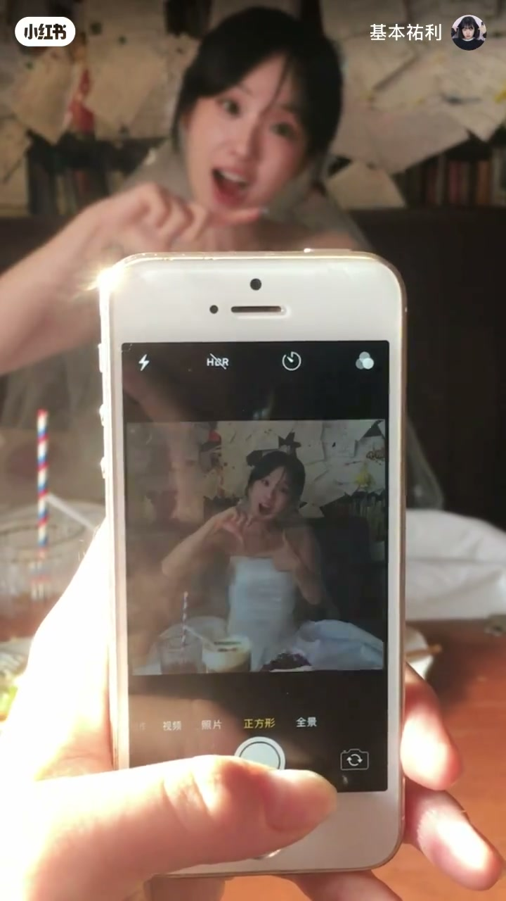

内容要点
基本祐利用一段咖啡馆里的连拍短视频，展示「1–10 数字手势拍照法」：开场呼唤拍摄对象「狗咪你准备好了吗」，随后用数字口令驱动表情与手势切换。口播多为简短计数，真正的信息在画面——手机正方形取景、婚纱造型与十指张开的「10」定格。
知识结构
标题条点明 1–10 数字拍照法；呼唤「狗咪」后开始 1、2、3 口令，并穿插「哇好可爱」的即时反馈。
中段继续用数字口令推进姿势变换；拍摄者手持旧款 iPhone 以正方形模式取景，屏内手势清晰、真人背景略虚。
正机位定格十指张开于脸侧的「10」手势，桌面饮品与留言墙同框，完成整套数字姿势的视觉收尾。
这套「韩女认证」姿势的可复制点不在长篇口播，而在结构：用 1–10 口令当节拍器，让被拍者每换一个数字就换一组手部造型与表情；拍摄端固定正方形取景，最后用双手十指全开的「10」做记忆点。
00:00-00:05开场：呼唤「狗咪」与标题立题
视频开头对拍摄对象喊：「狗咪你准备好了吗」，随即「来」进入计数。画面是咖啡馆卡座：女生穿抹胸白礼服、戴白纱微笑坐着，前景手机正在取景；上方标题条写着「韩女认证：当我掌握了1–10数字拍照法」。
口令很快走到 1、2、3，并夹一句「哇好可爱」。这一段的作用是热场与立题：后面所有手势都属于同一套数字拍照法，而不是零散摆拍。
00:05-00:17手机取景：数字口令驱动中段手势
中段 Whisper 捕获到大量短数字口令（4、5、6、8、9、10 等）以及「没事啦」「好」「最后……」一类互动碎片。数字顺序并不严格线性，属短视频连拍口播常态——观众应以画面手势为准，而不是把 ASR 数字串当完整教材目录。
关键画面是第一人称举着白色旧款 iPhone：系统相机停在「正方形」模式，屏内女生双手配合表情做姿势，桌上有条纹吸管饮品与蛋糕。构图刻意让「正在被拍」本身成为内容，强化教程的现场感。


00:17-00:26收束定格：十指全开的数字「10」
后段口播变稀，信息交给正机位：女生双手在脸侧张开十指，做出明确的「10」手势，嘴型夸张活泼；桌面同时摆着条纹吸管饮品、带绿植装饰的咖啡和蓝莓蛋糕，背景留言墙密密麻麻。
作为整套 1–10 的终点姿势，「10」最好记、最好模仿，也最适合当封面或片尾定格。整片几乎没有逐步讲解每个数字的文字说明，复刻路径是：听口令换姿势，拍正方形，最后定格十指全开。
完整转录（30段）
以下文本由 Whisper medium 模型自动转录，可能存在少量识别误差，已尽可能修正。
狗咪你准备好了吗
来
1
2
3
2
哇好可爱
3
4
4
4
没死啦
5
5
6
6
6
好
10
10
8
8
10
10
好
9
9
最后1
20
20